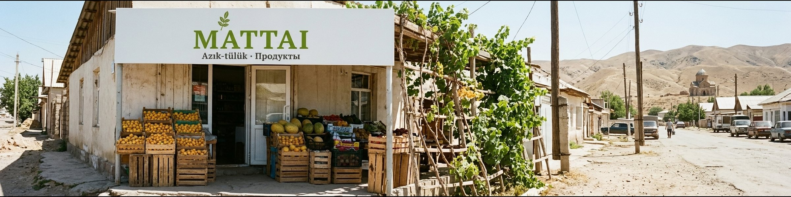
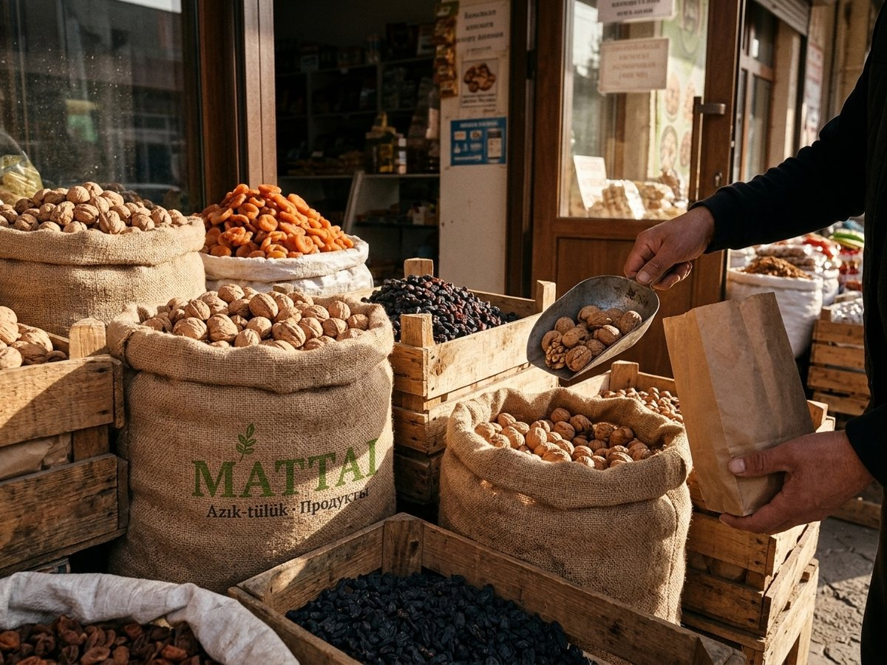
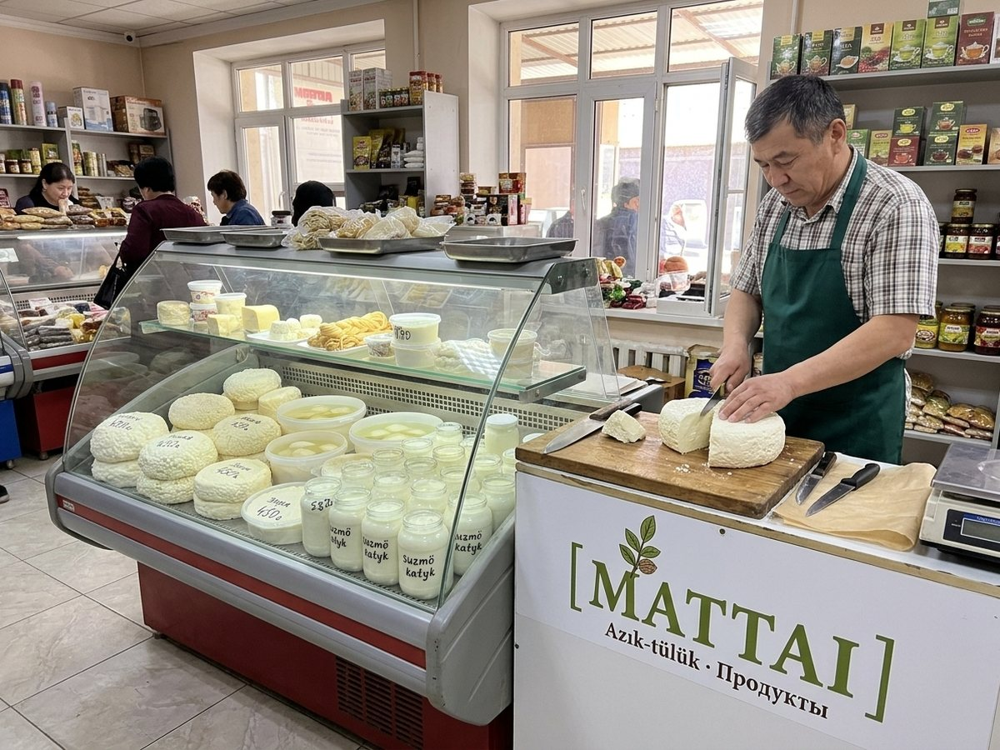
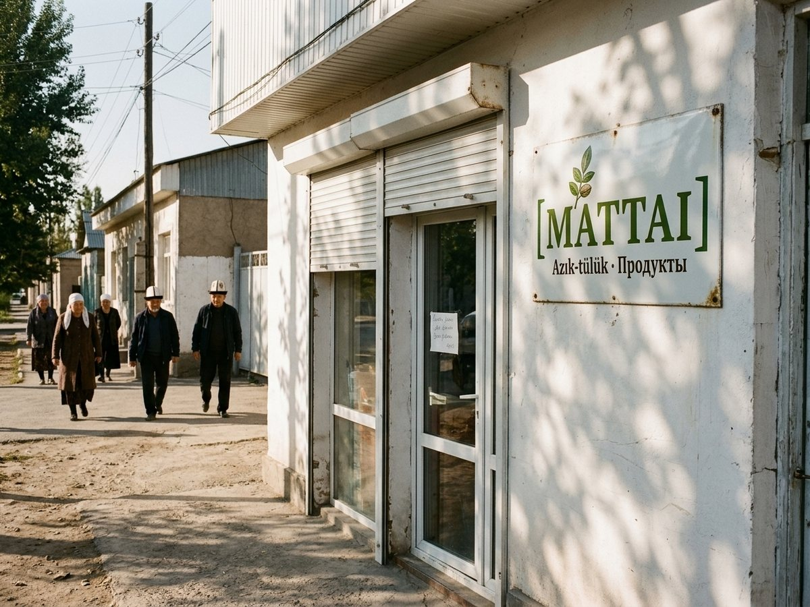

Mattai
Jañı jangak keldi. Bardık dükööndördö.
♥ 51 · Comment · Share
Azık-tülük · Продукты. Closed Sunday mornings.
Jañı jangak keldi. Bardık dükööndördö.
♥ 51 · Comment · ShareMattai dükönü ✓МаттайMattai dükönü ✓МаттайMattai dükönü ✓МаттайMattai dükönü ✓МаттайMattai dükönü ✓МаттайMattai dükönü ✓МаттайMattai dükönü ✓МаттайMattai dükönü ✓МаттайMattai dükönü ✓МаттайJañı jangak keldi. Bardık dükööndördö.
♥ 51 · Comment · ShareMattai, Iyık Janyl's own grocery chain since 1999, named for St Mattai. Local walnuts, apricots and küp panyr. Closed on Sunday mornings until 12:00.
Mattai azık-tülük dükönü, 1999-jıldan beri. Jekshembi saat 12-ge cheyin jabık.
11 locations on Kartalar: Iyık Janyl 9, Tash-Kömür 2.

Walnuts and apricots
Küp panyr
Sunday morningEverything you need, but don't come Sunday morning: closed for the liturgy.